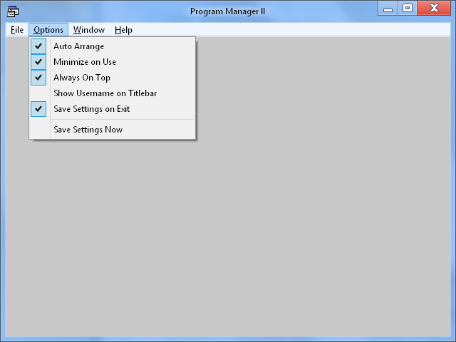
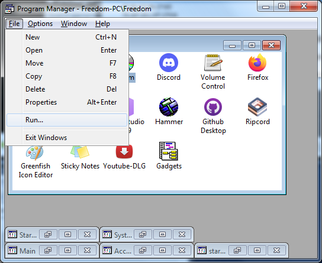
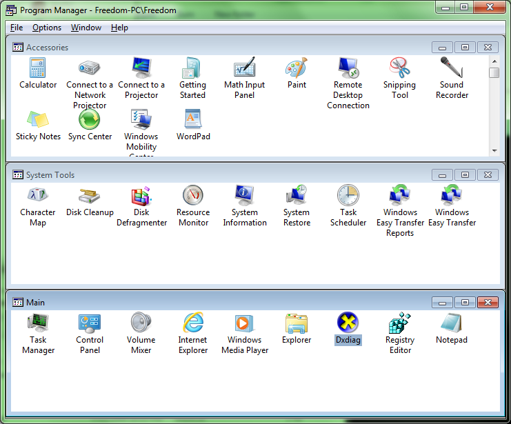

Program Manager II for Windows
What is Program Manager?
Originally, Program Manager was the default shell that shipped with Microsoft Windows from version 3.0 and NT 3.1 through 3.11 and NT 3.51. It was included as an optional shell with Windows until Windows XP SP2, when it was removed from the codebase. Program Manager II is a complete rewrite that aims to mimic the original desktop metaphor that Program Manager created, while retaining many of the modern amenities common in current Windows shells.
Download Now!
Get Program Manager II today.
NOTE: THE FOLLOWING PICTURES ARE OF THE ORIGINAL PROGRAM MANAGER.
 